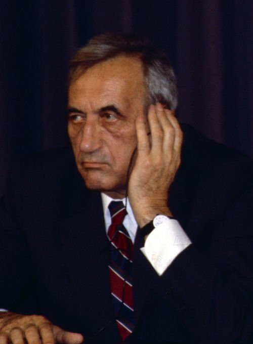

Zadanie 1
Wybory kontraktowe są określane także jako wybory czerwcowe. Były to pierwsze częściowo wolne wybory w historii Polski po II wojnie światowej. Pierwsza tura odbyła się 4 czerwca 1989 r., druga zaś 18 czerwca. Zasady przeprowadzenia wyborów kontraktowych został ustalone i doprecyzowane podczas rozmów Okrągłego Stołu (6 luty - 5 kwietnia 1989 r.). Ustalono, że PZPR oraz jej satelici obsadzą, co najmniej 299 (65%) miejsc w Sejmie. Pozostałe mandaty poselskie w liczbie 161 (35%) zostały przeznaczone dla kandydatów bezpartyjnych. Walka o te miejsca oraz walka o wszystkie mandaty senatorskie (100) miała charakter otwarty i demokratyczny. Wbrew oczekiwaniom władz i "Solidarność" zdobyła praktycznie wszystko, na co pozwalały okrągłostołowe ustalenia.
Zadanie 2
Wydarzenia, które doprowadziły do powołania niekomunistycznego premiera w 1989 r.:
- angażowanie się Tadeusza Mazowieckiego w działalność opozycyjną i wydarzenia jesieni narodów,
- od września 1988 r. w Magdalence odbywały się nieoficjalne spotkania władzy z opozycją, w czasie których zadecydowano o podjęciu rozmów Okrągłego Stołu,
-
obrady Okrągłego Stołu trwały od 6 lutego do 5 kwietnia 1989 r. Uczestniczyli w nich reprezentanci komunistycznej władzy pod kierownictwem gen. Czesława Kiszczaka oraz przedstawiciele "Solidarności" z Lechem Wałęsą na czele,
- porozumienia Okrągłego Stołu zostały podpisane 5 kwietnia 1989 r. Jednym z ustaleń było przeprowadzenie częściowo wolnych wyborów. Zwycięstwo odnieśli w nich kandydaci "Solidarności". W wyborach prezydenckich, które przeprowadzono 19 lipca 1989 r. Zgromadzenie Narodowe przewagą jednego głosu wybrało gen. Wojciecha Jaruzelskiego, który wyznaczył na premiera gen. Czesława Kiszczaka,
- 19 sierpnia 1989 r. prezydent Wojciech Jaruzelski przyjął rezygnację gen. Kiszczaka. 24 sierpnia 1989 r. na wniosek prezydenta Sejm kontraktowy wybrał na premiera Tadeusza Mazowieckiego. Poparcia udzieliła mu Krajowa Komisja Wykonawcza NSZZ "Solidarność". 378 posłów oddało głos za, 4 było przeciwko i 41 wstrzymało się od głosu. Tym samym Mazowieckiemu powierzono misję utworzenia nowego rządu. Był on pierwszym niekomunistycznym premierem w Polsce od zakończenia II wojny światowej,
-
12 września 1989 r. doszło do oficjalnego rządu kierowanego przez Tadeusza Mazowieckiego.

Tadeusz Mazowiecki, źródło zdjęcia: Wikimedia Commons.